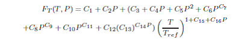
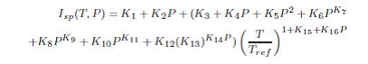
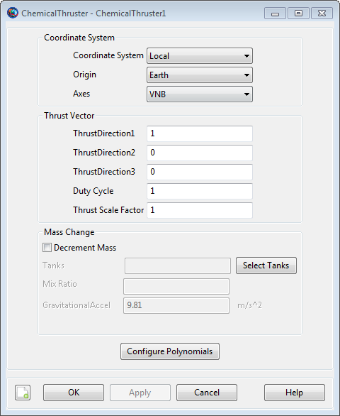
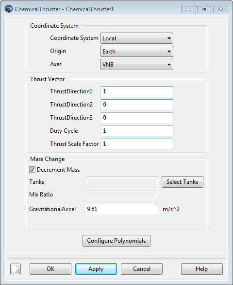
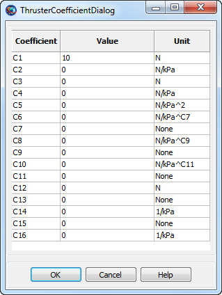
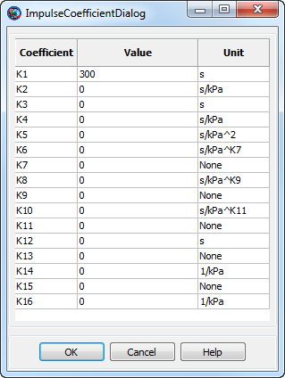
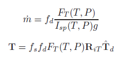

ChemicalThruster — A chemical thruster model
The ChemicalThruster resource is a model of a chemical thruster which uses polynomials to model the thrust and specific impulse as a function of tank pressure and temperature. The ChemicalThruster model also allows you to specify properties such as a duty cycle and scale factor and to connect a ChemicalThruster with a ChemicalTank. You can flexibly define the direction of the thrust by specifying the thrust components in coordinate systems such as (locally defined) SpacecraftBody or LVLH, or by choosing any configured CoordinateSystem resource.
See Also: BeginFiniteBurn,ChemicalTank,FiniteBurn
The constants Ci below are used in the following equation to calculate thrust (in Newtons), FT, as a function of pressure P (kPa) and temperature T (Celsius).
|  |
The constants Ki below are used in the following equation to calculate ISP (in seconds), Isp, as a function of pressure P (kPa) and temperature T (Celsius).
|  |
| Field | Description | ||||||||||||
|---|---|---|---|---|---|---|---|---|---|---|---|---|---|
| Axes | Allows the user to define a spacecraft centered set of axes for the ChemicalThruster. This field cannot be modified in the Mission Sequence
| ||||||||||||
| CoordinateSystem | Determines what coordinate system the orientation parameters, ThrustDirection1, ThrustDirection2, and ThrustDirection3 refer to. This field cannot be modified in the Mission Sequence.
| ||||||||||||
| C1 | Thrust coefficient.
| ||||||||||||
| C2 | Thrust coefficient.
| ||||||||||||
| C3 | Thrust coefficient.
| ||||||||||||
| C4 | Thrust coefficient.
| ||||||||||||
| C5 | Thrust coefficient.
| ||||||||||||
| C6 | Thrust coefficient.
| ||||||||||||
| C7 | Thrust coefficient.
| ||||||||||||
| C8 | Thrust coefficient.
| ||||||||||||
| C9 | Thrust coefficient.
| ||||||||||||
| C10 | Thrust coefficient.
| ||||||||||||
| C11 | Thrust coefficient.
| ||||||||||||
| C12 | Thrust coefficient.
| ||||||||||||
| C13 | Thrust coefficient.
| ||||||||||||
| C14 | Thrust coefficient.
| ||||||||||||
| C15 | Thrust coefficient.
| ||||||||||||
| C16 | Thrust coefficient.
| ||||||||||||
| DecrementMass | Flag which determines if the FuelMass is to be decremented as it used. This field cannot be modified in the Mission Sequence.
| ||||||||||||
| DutyCycle | Fraction of time that the thrusters are on during a maneuver. The thrust applied to the spacecraft is scaled by this amount. Note that this scale factor also affects mass flow rate.
| ||||||||||||
| GravitationalAccel | The gravitational acceleration.
| ||||||||||||
| K1 | ISP coefficient.
| ||||||||||||
| K2 | ISP coefficient.
| ||||||||||||
| K3 | ISP coefficient.
| ||||||||||||
| K4 | ISP coefficient.
| ||||||||||||
| K5 | ISP coefficient.
| ||||||||||||
| K6 | ISP coefficient.
| ||||||||||||
| K7 | ISP coefficient.
| ||||||||||||
| K8 | ISP coefficient.
| ||||||||||||
| K9 | ISP coefficient.
| ||||||||||||
| K10 | ISP coefficient.
| ||||||||||||
| K11 | ISP coefficient.
| ||||||||||||
| K12 | ISP coefficient.
| ||||||||||||
| K13 | ISP coefficient.
| ||||||||||||
| K14 | ISP coefficient.
| ||||||||||||
| K15 | ISP coefficient.
| ||||||||||||
| K16 | ISP coefficient.
| ||||||||||||
| MixRatio | The mixture ratio employed to draw fuel from multiple tanks. For example, if there are two tanks and MixRatio is set to [2 1], then twice as much fuel will be drawn from tank one as from tank 2 in the Tank list. Note, if a MixRatio is not supplied, fuel is drawn from tanks in equal amounts, (the MixRatio is set to a vector of ones the same length as the Tank list).
| ||||||||||||
| Origin | This field, used in conjunction with the Axes field, allows the user to define a spacecraft centered set of axes for the ChemicalThruster. Origin has no affect when a Local coordinate system is used and the Axes are set to MJ2000Eq or SpacecraftBody. This field cannot be modified in the Mission Sequence.
| ||||||||||||
| Tanks | A list of ChemicalTank(s) from
which the thruster draws propellant from. In the script, an empty
list, e.g.,
| ||||||||||||
| ThrustDirection1 | X component of the spacecraft thrust vector direction.
| ||||||||||||
| ThrustDirection2 | Y component of the spacecraft thrust vector direction.
| ||||||||||||
| ThrustDirection3 | Z component of the spacecraft thrust vector direction.
| ||||||||||||
| ThrustScaleFactor | ThrustScaleFactor is a scale factor that is multiplied by the thrust vector, for a given thruster, before the thrust vector is added into the total acceleration. Note that the value of this scale factor does not affect the mass flow rate.
|
| Command or Resource | Description |
|---|---|
| BeginFiniteBurn/EndFiniteBurn command | Use these commands, which require a Spacecraft and a FiniteBurn name as input, to implement a finite burn. |
| ChemicalTank resource | This resource contains the fuel used to power the ChemicalThruster specified by the FiniteBurn resource. |
| FiniteBurn resource | When using the BeginFiniteBurn/EndFiniteBurn commands, you must specify which FiniteBurn resource to implement. The FiniteBurn resource specifies which ChemicalThruster(s) to use for the finite burn. |
| Spacecraft resource | When using the BeginFiniteBurn/EndFiniteBurn commands, you must specify which Spacecraft to apply the finite burn to. |
| Propagate command | In order to implement a non-zero finite burn, a Propagate statement must occurr within the BeginFiniteBurn and EndFiniteBurn statements. |
The ChemicalThruster dialog box allows you to specify properties of a ChemicalThruster including the Coordinate System of the thrust acceleration direction vector, the thrust magnitude and Isp coefficients, and choice of ChemicalTank. The layout of the ChemicalThruster dialog box is shown below.
|  |
When configuring the Coordinate System field, you can choose between existing coordinate systems or use locally defined coordinate systems. The Axes field is only active if Coordinate System is set to . The Origin field is only active if Coordinate System is set to and Axes is set to either or .
As shown below, if Decrement Mass is checked, then you can input the gravitational acceleration value used to calculate fuel use. The value of the gravitational acceleration input here only affects fuel use and does not affect the force model.
|  |
Selecting the button brings up the following dialog box where you may input the coefficients for the ChemicalThruster polynomial.
|  |
Similarly, clicking the Edit Impulse Coef. button brings up the following dialog box where you may input the coefficients for the specific impulse (ISP) polynomial.
|  |
A ChemicalThruster resource is used only in association with finite maneuvers. To implement a finite maneuver, you must first create both a ChemicalTank and a FiniteBurn resource. You must also associate a ChemicalTank with the ChemicalThruster resource and you must associate a ChemicalThruster with the FiniteBurn resource. The finite maneuver is implemented using the BeginFiniteBurn/EndFiniteBurn commands. See the BeginFiniteBurn/EndFiniteBurn command documentation for worked examples on how the ChemicalThruster resource is used in conjunction with finite maneuvers.
Unscaled thrust, FT, and Isp, as a function of Pressure, in kPa, and Temperature, in degrees Celsius, are calculated using the following polynomials.
The thrust, T, output in Newtons, is scaled by the and . The thrust acceleration direction vector (the direction of the actual acceleration not the thruster nozzle) is given by and is applied in the input Coordinate System. The Isp is output in seconds.
The mass flow rate and the thrust equations are shown below where FT and Isp are defined above, fd is the duty cycle, fs is the thrust scale factor, RiT is the rotation matrix from the thrust coordinate system to the inertial system, and Td is the unitized thrust direction.
|  |
Here, a Local coordinate system is defined as one that we configure "locally" using the ChemicalThruster resource interface as opposed to defining a coordinate system using the Coordinate Systems folder in the Resources Tree.
To configure a local coordinate system, you must specify the coordinate system of the input thrust acceleration direction vector, . If you choose a local coordinate system, the four choices available, as given by the sub-field, are , , , and . or Velocity-Normal-Binormal is a non-inertial coordinate system based upon the motion of the spacecraft with respect to the sub-field. For example, if the is chosen as Earth, then the X-axis of this coordinate system is the along the velocity of the spacecraft with respect to the Earth, the Y-axis is along the instantaneous orbit normal (with respect to the Earth) of the spacecraft, and the Z-axis completes the right-handed set.
Similarly, Local Vertical Local Horizontal or is also a non-inertial coordinate system based upon the motion of the spacecraft with respect to the sub-field. Again, if we choose Earth as the origin, then the X-axis of this coordinate system is the position of the spacecraft with respect to the Earth, the Z-axis is the instantaneous orbit normal (with respect to the Earth) of the spacecraft, and the Y-axis completes the right-handed set.
is the J2000-based Earth-centered Earth mean equator inertial coordinate system. Note that the sub-field is not needed to define this coordinate system.
is the attitude system of the spacecraft. Since the thrust is applied in this system, GMAT uses the attitude of the spacecraft, a spacecraft attribute, to determine the inertial thrust direction. Note that the Origin sub-field is not needed to define this coordinate system.
Note that both the thrust and ISP polynomials have terms that involve the ratio, (Temperature / Reference Temperature). For GMAT, this temperature ratio is calculated in Celsius units, and thus, there is a discontinuity when the Reference Temperature is equal to zero. For this reason, GMAT requires that the absolute value of the input Reference Temperature is greater than 0.01.
Note also that the form of the Thrust and ISP polynomial has some behavior, when the Reference Temperature is near 0 degrees Centigrade, that you need to be aware of. Because of the previously mentioned discontinuity, the polynomials do not vary smoothly when the Reference Temperature is near zero. For example, consider the two Reference Temperatures, -0.011 and + 0.011 degrees Centigrade. These two temperatures are close to each other in value and one might expect that they have roughly similar thrust and ISP values. This may not be the case, depending upon your choice of thrust/ISP coefficients, since the temperature ratios associated with the two Reference Temperatures have the same magnitude but different signs. You may choose to set the input Reference Temperature equal to the input Temperature, thus eliminating any dependence of thrust and ISP with temperature when using the currently implemented ChemicalTank model based upon Boyle’s Law where the fuel Temperature does not change as fuel is depleted.
Create a default ChemicalTank and a ChemicalThruster that allows for fuel depletion, assign the ChemicalThruster the default ChemicalTank, and attach both the ChemicalThruster and ChemicalTank to a Spacecraft.
% Create the ChemicalTank Resource
Create ChemicalTank FuelTank1
FuelTank1.AllowNegativeFuelMass = false
FuelTank1.FuelMass = 756
FuelTank1.Pressure = 1500
FuelTank1.Temperature = 20
FuelTank1.RefTemperature = 20
FuelTank1.Volume = 0.75
FuelTank1.FuelDensity = 1260
FuelTank1.PressureModel = PressureRegulated
% Create a ChemicalThruster, that allows fuel depletion, and assign it a ChemicalTank
Create ChemicalThruster Thruster1
Thruster1.CoordinateSystem = Local
Thruster1.Origin = Earth
Thruster1.Axes = VNB
Thruster1.ThrustDirection1 = 1
Thruster1.ThrustDirection2 = 0
Thruster1.ThrustDirection3 = 0
Thruster1.DutyCycle = 1
Thruster1.ThrustScaleFactor = 1
Thruster1.DecrementMass = true
Thruster1.Tank = {FuelTank1}
Thruster1.GravitationalAccel = 9.810000000000001
Thruster1.C1 = 10
Thruster1.C2 = 0
Thruster1.C3 = 0
Thruster1.C4 = 0
Thruster1.C5 = 0
Thruster1.C6 = 0
Thruster1.C7 = 0
Thruster1.C8 = 0
Thruster1.C9 = 0
Thruster1.C10 = 0
Thruster1.C11 = 0
Thruster1.C12 = 0
Thruster1.C13 = 0
Thruster1.C14 = 0
Thruster1.C15 = 0
Thruster1.C16 = 0
Thruster1.K1 = 300
Thruster1.K2 = 0
Thruster1.K3 = 0
Thruster1.K4 = 0
Thruster1.K5 = 0
Thruster1.K6 = 0
Thruster1.K7 = 0
Thruster1.K8 = 0
Thruster1.K9 = 0
Thruster1.K10 = 0
Thruster1.K11 = 0
Thruster1.K12 = 0
Thruster1.K13 = 0
Thruster1.K14 = 0
Thruster1.K15 = 0
Thruster1.K16 = 0
% Add the ChemicalThruster and the ChemicalTank to a Spacecraft
Create Spacecraft DefaultSC
DefaultSC.Tanks = {FuelTank1}
DefaultSC.Thrusters = {Thruster1}
BeginMissionSequenceCreate two ChemicalTanks (called aTank1 and aTank2) and a ChemicalThruster, attach both the ChemicalThruster and ChemicalTanks to a Spacecraft, and configure the thruster to draw four times as much fuel from aTank1 than aTank2.
% Create the ChemicalTank Resource
Create Spacecraft aSat
aSat.Tanks = {aTank1,aTank2}
aSat.Thrusters = {aThruster}
% Create two tanks
Create ChemicalTank aTank1 aTank2
% Configure thruster to draw four times as much fuel
% from aTank1 than aTank2
Create ChemicalThruster aThruster
aThruster.Tank = {aTank1,aTank2}
aThruster.MixRatio = [4 1]
BeginMissionSequence